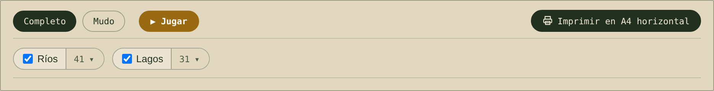
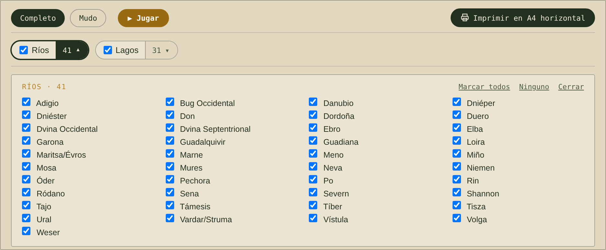
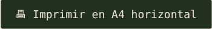

Atlas Abierto es una colección de mapas escolares gratuitos, físicos y políticos, que puedes proyectar en clase o imprimir en A4. Sin registro, sin publicidad, sin cookies y sin datos personales. Están pensados para Secundaria y Bachillerato, pero se adaptan a otros niveles.
Personalízalo con el panel Personaliza este mapa, que aparece sobre el mapa en Hidrografía y Relieve.
Imprímelo con el botón Imprimir en A4 horizontal.
El panel «Personaliza este mapa»
Así se ve el panel. Marca o desmarca una categoría (por ejemplo Ríos o Lagos) para mostrarla u ocultarla en todo el mapa.

El panel de personalización: casillas por categoría y, arriba a la derecha, los botones Mudo y Completo.
Para elegir elementos concretos, pulsa el número que hay junto a cada categoría (el «41 ▾» de Ríos). Se abre la lista y puedes marcar solo los que estudies, o usar Marcar todos y Ninguno.

Lista desplegada: marca solo los ríos que quieras que aparezcan.
Botones «Completo» y «Mudo»
Completo: el mapa con todos sus elementos y nombres.
Mudo: deja solo la base con el relieve, sin ríos, lagos ni nombres. Sirve para que el alumnado los dibuje y los rotule. También puedes partir de Mudo y marcar solo lo que quieras que aparezca.
Completo: con ríos, lagos y nombres
Mudo: solo la base con el relieve
Imprimir
Cuando el mapa esté como quieres, pulsa este botón, que está encima del mapa. Se imprime en A4 apaisado, sin el panel ni el menú.

El botón de impresión.
Ideas para el aula
Mapa mudo para ejercicios y exámenes: pulsa Mudo, imprime la base y que el alumnado dibuje y rotule los ríos y los lagos.
Comparar un mapa físico y uno político de la misma zona.
Seleccionar solo lo que se estudia en cada sesión: por ejemplo, solo los ríos de la península ibérica.
Proyectar en la pizarra digital y mostrar u ocultar elementos para ir descubriéndolos.
Es libre de verdad
Todos los mapas tienen licencia CC BY 4.0: puedes usarlos, copiarlos, modificarlos e incluirlos en tus materiales, dentro y fuera del centro, citando «Atlas Abierto». Más detalles en Licencias y fuentes.
Privacidad
La web mide las visitas de forma anónima, sin cookies ni datos personales. El alumnado puede usarla sin crear cuenta ni dar ningún dato.
Sugerencias y correcciones
Si ves un error, echas en falta un mapa o tienes una idea, puedes escribir a contacto@atlasabierto.org. Los mapas se revisan y mejoran de forma continua.